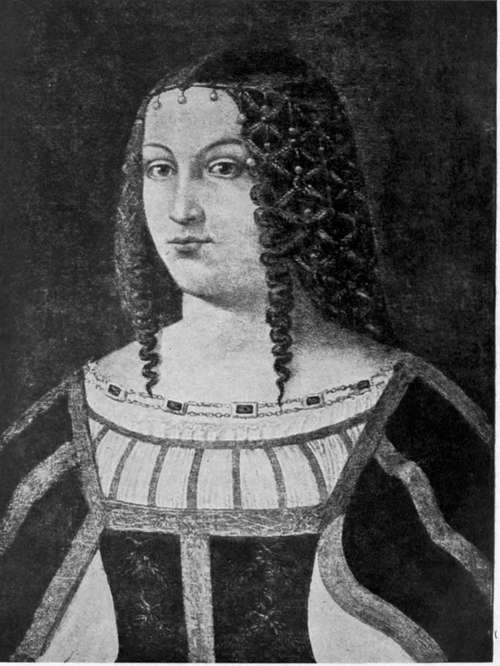

Rimini And Pesaro. Part 2
Description
This section is from the book "The Life Of Cesare Borgia", by Rafael Sabatini. Also available from Amazon: The Life of Cesare Borgia.
Rimini And Pesaro. Part 2
In that year in September twelve new cardinals were appointed, and upon each of those was levied, as a tax, a tithe of the first year's revenues of the benefices upon which they entered. The only justifiable exception that can be taken to this lies in the number of cardinals elected at one time, which lends colour to the assumption that the sole aim of that election was to raise additional funds for Cesare's campaign. Probably it was also Alexander's aim further to strengthen his power with the Sacred College, so that he could depend upon a majority to ensure his will in all matters. But we are at the moment concerned with the matter of the levied tax.
It has been dubbed " an atrocious act of simony;" but the reasoning that so construes it is none so clear. The cardinals' hats carried with them vast benefices.
LUCREZIA BORGIA. (From a contemporary portrait in the Museum of Nimes.)
These benefices were the property of the Church; they were in the gift and bestowal of the Pope, and in the bestowing of them the Pope levied a proportionate tax. Setting aside the argument that this tax was not an invention of Alexander's, does such a proceeding really amount to a " sale " of benefices ? A sale presupposes bargaining, a making of terms between two parties, an adjusting of a price to be paid. There is evidence of no such marketing of these benefices; indeed one cardinal, vowed to poverty, received his hat without the imposition of a tax, another was Cesare's brother in law, Amanieu d'Albret, who had been promised the hat a year ago. It is further to be borne in mind that, four months earlier, the Pope had levied a similar decima, or tax, upon the entire College of Cardinals and every official in the service of the Holy See, for the purposes of the expedition against the Muslim, who was in arms against Christianity. Naturally that tax was not popular with luxurious, self seeking, cinquecento prelates, who in the main cared entirely for their own prosperity and not at all for that of Christianity, and you may realize how, by levying it, Alexander laid himself open to harsh criticism.
The only impugnable matter in the deed lies, as has been said, in the number of cardinals so created at a batch. But the ends to be served may be held to justify, if not altogether, at least in some measure, the means adopted. The Romagna war for which the funds were needed was primarily for the advancement of the Church, to expunge those faithless vicars who, appointed by the Holy See and holding their fiefs in trust for her, refused payment of just tribute and otherwise so acted as to alienate from the Church the States which she claimed for her own. Their restoration to the Church however much it might be a means of founding a Borgia dynasty in the Romagna made for the greater power and glory of the Holy See. Let us remember this, and that such was the end which that tax, levied upon those newly elected cardinals, went to serve. The aggrandizement of the House of Borgia was certainly one of the results to be expected from the Romagna campaign, but we are not justified in accounting it the sole aim and end of that campaign.
Alexander had this advantage over either Sixtus IV or Innocent VIII not to go beyond those Popes whom he had served as Vice-Chancellor, for instances of flagrant nepotism that he at least served two purposes at once, and that, in aggrandizing his own family, he strengthened the temporal power of the Church, whereas those others had done nothing but undermine it that they might enrich their progeny.
And whilst on this subject of the " sale " of cardinals' hats, it may not be amiss to say a word concerning the " sale" of indulgences with which Alexander has been so freely charged. Here again there has been too loud an outcry against Alexander an outcry whose indignant stridency leads one to suppose that the sale of indulgences was a simony invented by him, or else practised by him to an extent shamefully unprecedented. Such is very far from being the case. The arch type of indulgence seller as of all other simoniacal practices is Innocent VIII. In his reign we have seen the murderer commonly given to choose between the hangman and the purchase of a pardon, and we have seen the moneys so obtained providing his bastard, the Cardinal Francesco Cibo, with the means for the luxuriously licentious life whose gross disorders prematurely killed him.
To no such flagitious lengths as these can it be shown that Alexander carried the " sale" of the indulgences he dispensed. He had no lack of precedent for the practice, and, so far as the actual practice itself is concerned, it would be difficult to show that it was unjustifiable or simoniacal so long as confined within certain well defined bounds, and so long as the sums levied by it were properly employed to the benefit of Christianity. It is a practice comparable to the mulcting of a civil offender against magisterial laws. Because our magistrates levy fines, it does not occur to modern critics to say that they sell pardons and immunity from gaol. It is universally recognized as a wise and commendable measure, serving the twofold purpose of punishing the offender and benefiting the temporal State against which he has offended. Need it be less commendable in the case of spiritual offences against a spiritual State ? It is more useful than the imposition of the pattering of a dozen prayers at bedtime, and since, no doubt, it falls more heavily upon the offender, it possibly makes to an even greater extent for his spiritual improvement.
Thus considered, this " sale " of indulgences loses a deal of the heinousness with which it has been invested. The funds so realized go into the coffers of the Church, which is fit and proper. What afterwards becomes of them at the hands of Alexander opens up another matter altogether, one in which we cannot close our eyes to the fact that he was as undutiful as many another who wore the Ring of the Fisherman before him. Yet this is to be said for him : that, if he plunged his hands freely into the treasury of the Holy See, at least he had the ability to contrive that this treasury should be well supplied ; and the circumstance that, when he died, he left the Church far wealthier and more powerful than she had been for centuries, with her dominions which his precursors had wantonly alienated reconsolidated into that powerful State that was to endure for three hundred years, is an argument to the credit of his pontificate not lightly to be set aside.
Continue to: